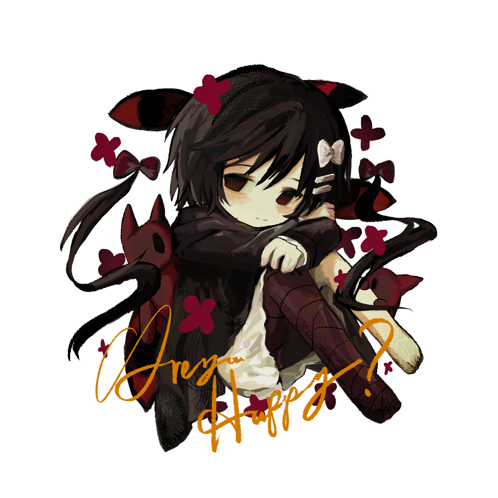
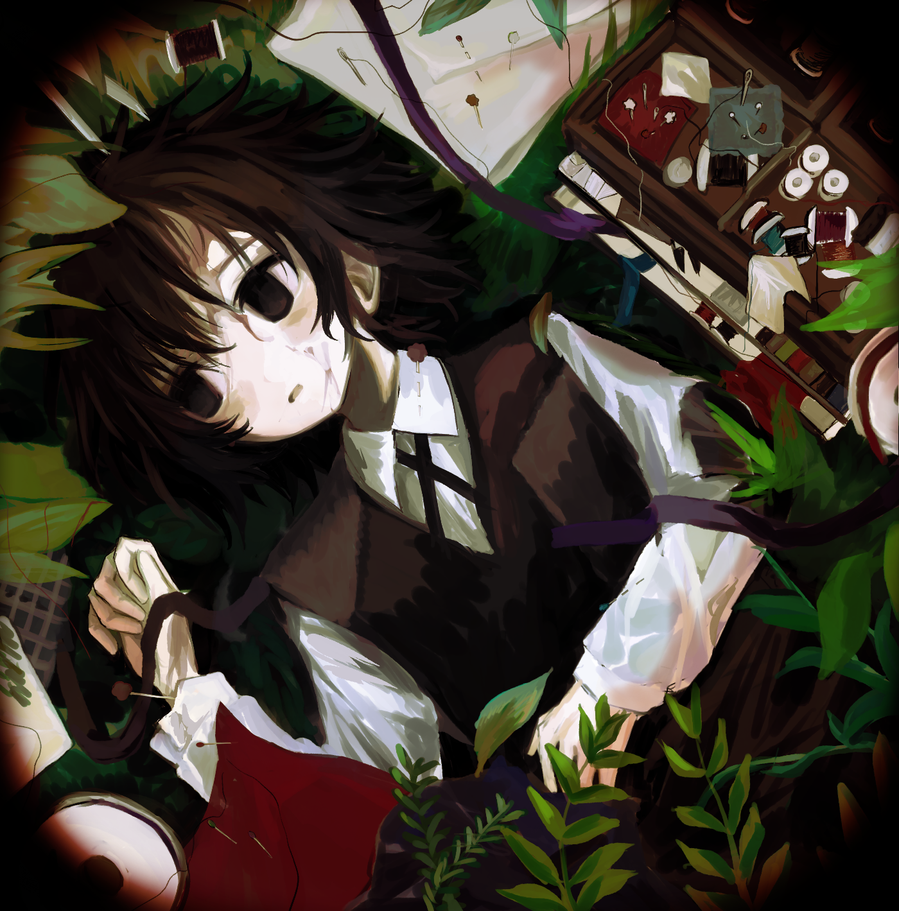
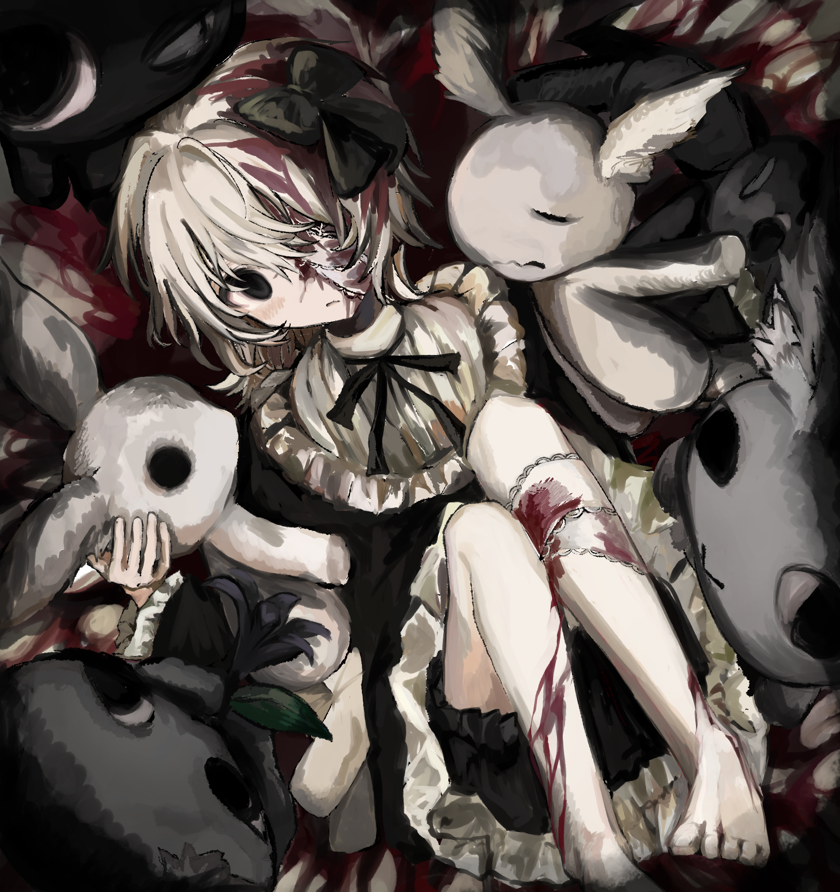

代わりの個人サイトへようこそ。
About
当サイトは管理人の活動サイトへのリンク置き場が主な役割です
現在新規の方からのご依頼は停止しております。
ご質問・ご連絡は各種SNSよりお願いします。
活動歴
- 2026/06/10 個人サイトkawari.jpを公開しました！



kawari.jp当サイトは管理人の活動サイトへのリンク置き場が主な役割です
現在新規の方からのご依頼は停止しております。
ご質問・ご連絡は各種SNSよりお願いします。
